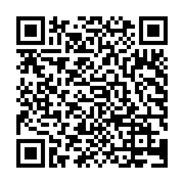
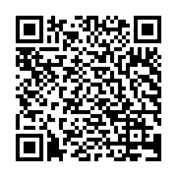

QR am Ablageort scannen → einloggen oder per E-Mail anmelden → Medien wählen → Foto → fertig.


Test-Ablauf (zwei Orte): Beide QR-Codes nacheinander scannen. Erwartet: jeder Code öffnet die Rückgabe-Seite mit genau seinem Ort im Titel (Cateringwagen bzw. Videostudio). Eine gemeldete Rückgabe erscheint für das Team in der Übergabe-Checkliste und bleibt gesperrt, bis das Team sie bestätigt.